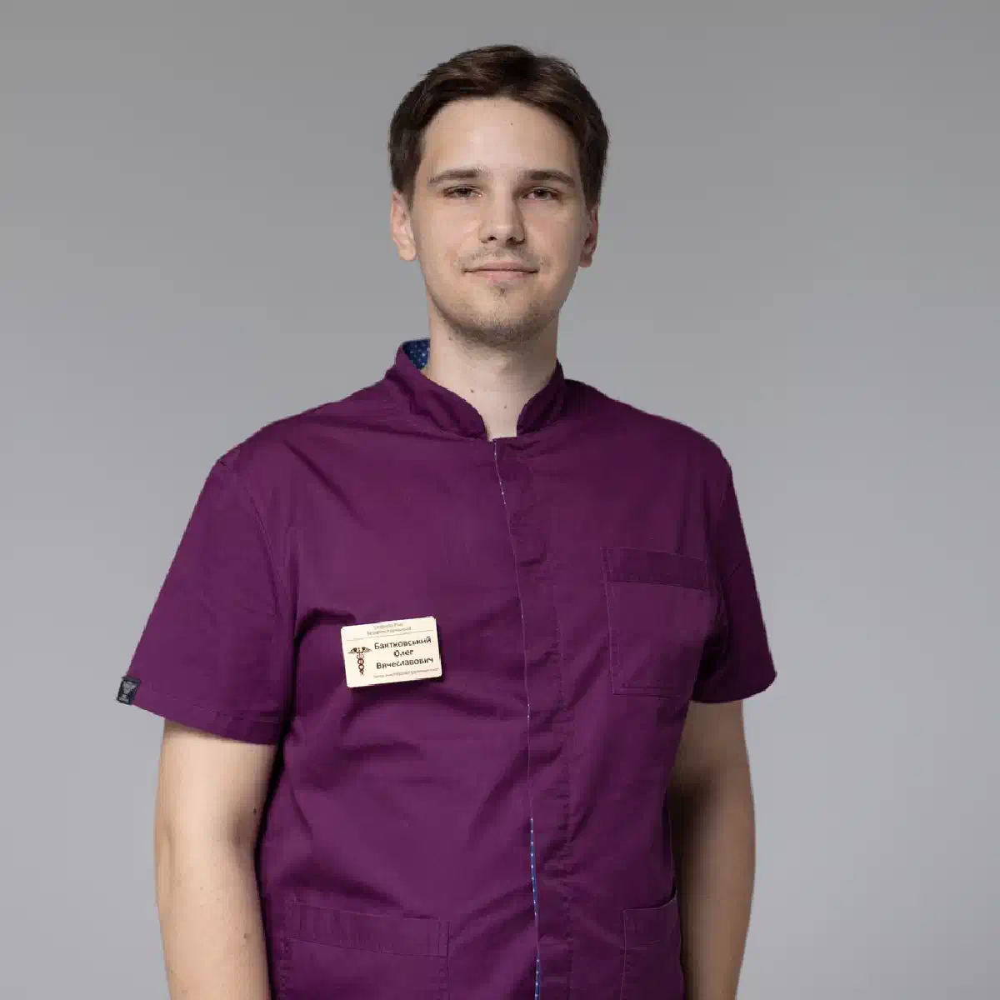

+38(068)
79 72 782
+38(068)
79 72 782Подшивка от наркотиков Чугуев
Защита от срыва и шанс на восстановление


Бесплатная консультация, работаем круглосуточно 24/7
Защита от срыва и шанс на восстановление

Дата написания: Обновляется...
Последнее обновление: Обновляется...
Подшивка от наркотиков в Чугуеве — это медикаментозный метод поддержки при лечении наркотической зависимости, который помогает снизить риск срыва и удержаться от повторного употребления. Чаще всего такая процедура применяется как часть комплексного лечения, когда пациент уже прошёл детоксикацию, находится в трезвом состоянии и готов продолжать восстановление под наблюдением специалистов. Основная задача подшивки — создать медикаментозный барьер, который помогает человеку удержаться от возврата к употреблению в наиболее уязвимый период. После отказа от наркотиков пациент может сталкиваться с психологической тягой, тревожностью, нарушением сна, эмоциональной нестабильностью и сильным желанием снова употребить вещество. Подшивка помогает снизить риск импульсивного срыва и даёт время для более глубокого восстановления.
Подшивка от наркомании не является самостоятельным «чудо-методом». Она не устраняет психологические причины зависимости, не меняет привычное окружение, не решает внутренние конфликты и не формирует новые навыки трезвой жизни автоматически. Поэтому процедуру нельзя рассматривать как единственный этап лечения. Наиболее устойчивый результат достигается тогда, когда подшивка сочетается с консультациями нарколога, психотерапией, реабилитацией, поддержкой близких и изменением образа жизни.
Процедура проводится только после осмотра врача-нарколога. Специалист оценивает состояние пациента, уточняет вид употребляемых веществ, длительность зависимости, наличие хронических заболеваний, противопоказаний, психоэмоциональное состояние и мотивацию к лечению. Также врач обязательно выясняет, когда было последнее употребление и требуется ли предварительная детоксикация. Только после полноценной консультации можно подобрать безопасный и подходящий вариант терапии. Такой подход помогает снизить риски, правильно подготовить пациента к процедуре и повысить эффективность дальнейшего лечения.
Кодировка от наркомании — это общее название методов, которые помогают пациенту удерживаться от употребления наркотических веществ и снизить риск повторного срыва. В наркологии могут использоваться разные подходы: медикаментозные, психотерапевтические и комбинированные. Подшивка относится к медикаментозным методам лечения и чаще всего применяется после очищения организма от наркотиков, когда острое состояние уже снято, а пациент готов продолжать восстановление.
Главная особенность процедуры заключается в том, что препарат вводится в организм на определённый срок и помогает создать защитный барьер от повторного употребления. В зависимости от выбранного средства он может блокировать действие определённых веществ или снижать ожидаемый эффект от их употребления. Это помогает пациенту удержаться от импульсивного решения, особенно в период, когда психологическая тяга ещё сохраняется, а риск срыва остаётся высоким.
Кодировка от наркотиков проводится только добровольно. Пациент должен понимать, как действует препарат, какие ограничения нужно соблюдать, почему важно не употреблять наркотические вещества после процедуры и зачем продолжать лечение дальше. Если человек не готов отказаться от употребления, не осознаёт проблему или воспринимает кодировку как формальность, подшивка может не дать устойчивого результата.
Перед кодировкой врач обязательно проводит консультацию. Нарколог уточняет, какие вещества употреблял пациент, когда было последнее употребление, как долго длится зависимость, были ли попытки лечения раньше, возникали ли срывы после детоксикации или реабилитации. Также специалист оценивает общее состояние организма, наличие заболеваний печени, сердца, почек, нервной системы, психоэмоциональное состояние и возможные противопоказания. Такой подход помогает сделать процедуру более безопасной и подобрать оптимальный вариант лечения. Важно, чтобы кодировка не воспринималась как единственный способ избавиться от зависимости.
При подшивке от наркотиков могут использоваться препараты, которые помогают снизить риск повторного употребления. Одним из наиболее известных средств является налтрексон. Налтрексон относится к препаратам, которые блокируют опиоидные рецепторы и применяются преимущественно при лечении опиоидной зависимости. Главная задача налтрексона — снизить эффект от употребления опиоидных веществ. Если человек после подшивки пытается употребить наркотик опиоидной группы, ожидаемого действия может не быть. Это помогает уменьшить мотивацию к повторному употреблению и создаёт дополнительный барьер от срыва.
Однако налтрексон не является универсальным препаратом от всех видов наркозависимости. Он не решает психологическую тягу напрямую, не заменяет психотерапию и не подходит каждому пациенту. Именно поэтому выбор препарата должен делать только врач-нарколог после осмотра, консультации и оценки состояния организма. Перед применением налтрексона важно, чтобы организм был очищен от опиоидов. Если препарат вводится слишком рано, когда наркотическое вещество ещё находится в организме, состояние пациента может резко ухудшиться. Поэтому перед подшивкой часто требуется детоксикация и обязательный период воздержания.
Детоксикация от наркотиков перед кодированием — это важный подготовительный этап лечения. Её цель — помочь организму избавиться от токсических веществ, облегчить состояние пациента, стабилизировать работу внутренних органов и подготовить человека к дальнейшей терапии. Подшивку нельзя проводить, если человек находится в состоянии наркотического опьянения, выраженной интоксикации или тяжёлой абстиненции. В такой ситуации организм испытывает сильную нагрузку, а введение препарата может быть небезопасным. Сначала врач должен оценить состояние пациента и при необходимости провести детоксикационную терапию.
Детоксикация может включать инфузионную поддержку, контроль давления, восстановление водно-солевого баланса, поддержку нервной системы, нормализацию сна и общее укрепление организма. Схема подбирается индивидуально, потому что состояние пациентов после употребления наркотиков может сильно отличаться. После стабилизации состояния врач определяет, можно ли переходить к кодированию. Особенно важно это при использовании налтрексона, поскольку перед его применением организм должен быть очищен от опиоидных веществ. Только такой подход снижает риски и делает лечение более безопасным.
Стоимость подшивки от наркомании в Чугуеве начинается от 15000 грн.
| Популярные услуги | Цена |
|---|---|
| Консультация нарколога | От 1500 грн |
| Лечение наркомании | От 2499 грн |
| Капельница от наркотиков | От 2499 грн |
| Вывод из запоя на дому | От 2199 грн |
Процедура подшивки от наркотиков начинается с консультации врача-нарколога. Специалист беседует с пациентом, уточняет, какие вещества употреблялись, как долго длится зависимость, когда было последнее употребление, были ли ранее попытки лечения, срывы, детоксикация или реабилитация. Также врач обращает внимание на наличие абстинентных симптомов, хронических заболеваний, психоэмоциональное состояние, работу печени, сердца, почек и нервной системы.
После первичной консультации нарколог оценивает, готов ли пациент к процедуре. Подшивку нельзя проводить, если человек находится в состоянии наркотического опьянения, выраженной интоксикации, тяжёлой ломки или нестабильного самочувствия. Если организм ещё не очищен от наркотических веществ, сначала проводится детоксикация. Она помогает снизить нагрузку на организм, облегчить симптомы отмены, стабилизировать давление, сон и общее состояние пациента.
Только после стабилизации состояния можно рассматривать вопрос о подшивке. Такой подход особенно важен при использовании препаратов, которые несовместимы с определёнными веществами или блокируют их действие. Врач должен убедиться, что процедура будет безопасной и не спровоцирует резкое ухудшение самочувствия. Перед введением препарата нарколог подробно объясняет пациенту механизм действия подшивки, срок её действия, возможные ограничения и важность полного отказа от употребления. Пациент должен понимать, что подшивка — это не самостоятельное лечение наркомании, а часть комплексной терапии. Она помогает создать медикаментозный барьер, но не заменяет реабилитацию, психотерапию и работу с причинами зависимости.
Процедура проводится только добровольно, после осознанного согласия пациента. Важно, чтобы человек понимал цель лечения, возможные последствия нарушения рекомендаций и необходимость дальнейшего восстановления. Если пациент воспринимает подшивку как формальность и не готов менять образ жизни, эффективность метода может быть ниже. После введения препарата врач даёт рекомендации по дальнейшему поведению, режиму, восстановлению и профилактике срыва. Пациенту объясняют, как избегать провоцирующих ситуаций, почему важно продолжать работу с психологом, когда нужно прийти на повторную консультацию и в каких случаях необходимо срочно обратиться за медицинской помощью.
Срок действия подшивки от наркотической зависимости зависит от выбранного препарата, формы введения, дозировки, состояния организма и индивидуальных особенностей пациента. В разных случаях медикаментозная защита может быть рассчитана на разные периоды. Точный срок определяет врач-нарколог после консультации. Специалист учитывает вид зависимости, длительность употребления, риск срыва, состояние здоровья, мотивацию пациента и наличие противопоказаний. Одному человеку может быть рекомендован короткий срок как первый этап лечения, другому — более длительная медикаментозная поддержка.
Важно понимать, что срок действия подшивки не означает полного излечения от зависимости. Препарат помогает снизить риск употребления, но психологическая тяга, привычки, стрессовые реакции и социальные факторы могут сохраняться. Поэтому период действия препарата нужно использовать для реабилитации и работы над причинами зависимости. После завершения срока действия подшивки желательно повторно обратиться к наркологу. Врач оценит состояние пациента, уровень тяги, психологическую устойчивость и подскажет, нужно ли продлевать лечение или менять схему поддержки.
Эффективность подшивки налтрексоном зависит от правильной подготовки, мотивации пациента и комплексного подхода к лечению. Налтрексон может быть полезен при опиоидной зависимости, потому что он блокирует рецепторы, через которые действуют опиоидные вещества. Это снижает ожидаемый эффект от употребления и помогает уменьшить риск срыва. Подшивка налтрексона особенно важна для пациентов, которые уже прошли детоксикацию и хотят получить дополнительную медикаментозную защиту. Препарат помогает создать барьер, который поддерживает человека в период восстановления и даёт время для психологической работы.
Но налтрексон не убирает зависимое мышление автоматически. Он не решает проблемы стресса, тревоги, депрессии, окружения и привычных моделей поведения. Если пациент после процедуры возвращается к прежнему образу жизни и не получает психологическую поддержку, риск срыва может сохраняться. Наиболее устойчивый результат достигается тогда, когда подшивка налтрексоном сочетается с реабилитацией, психотерапией, консультациями нарколога и поддержкой семьи. Медикаментозный блокатор помогает удержаться от употребления, а комплексное лечение помогает изменить причины, которые привели к зависимости.
Подшивка от наркотиков имеет противопоказания, поэтому перед процедурой обязательно проводится консультация врача. Нарколог должен убедиться, что препарат подходит пациенту и не создаёт угрозы для здоровья. Противопоказаниями могут быть тяжёлые заболевания печени, серьёзные нарушения работы почек, острые психические состояния, индивидуальная непереносимость препарата, тяжёлое общее состояние, выраженная интоксикация, острые воспалительные процессы и некоторые хронические заболевания в стадии обострения.
Также подшивку нельзя проводить, если пациент недавно употреблял вещества, с которыми препарат может быть несовместим. Особенно важно это при использовании налтрексона: перед его введением организм должен быть очищен от опиоидов. Если это условие не соблюдено, состояние пациента может ухудшиться. Важно не скрывать от врача информацию об употреблении, хронических заболеваниях, принимаемых лекарствах и предыдущем лечении. От честности пациента напрямую зависит безопасность процедуры и правильность выбранной схемы.
Употребление наркотиков после подшивки может быть опасным и непредсказуемым. В зависимости от препарата, который был введён, ожидаемый эффект от вещества может быть заблокирован или значительно ослаблен. Из-за этого некоторые пациенты могут ошибочно пытаться увеличить дозу, чтобы почувствовать привычное действие. Такое поведение создаёт серьёзные риски для здоровья и может привести к тяжёлым последствиям. Если при лечении использовался налтрексон, он блокирует действие опиоидов на рецепторы. Это означает, что человек может не получить ожидаемого эффекта от употребления наркотического вещества. Однако попытки «пробить блок» крайне опасны, потому что организм может отреагировать непредсказуемо, особенно если пациент принимает большую дозу или сочетает вещества между собой.
Именно поэтому врач заранее объясняет пациенту, что после подшивки нельзя употреблять наркотические вещества. Процедура требует осознанного согласия, готовности соблюдать рекомендации и понимания того, что медикаментозная защита работает только при ответственном отношении к лечению. Пациент должен знать, какие ограничения необходимо соблюдать и почему любые попытки проверить действие препарата недопустимы.
Подшивка не должна восприниматься как повод экспериментировать или проверять силу препарата. Её цель — защитить пациента от срыва, снизить риск повторного употребления, дать время на восстановление и помочь закрепить трезвость. Наиболее устойчивый результат достигается тогда, когда после процедуры человек продолжает лечение, проходит психологическую поддержку, избегает провоцирующего окружения и регулярно консультируется со специалистом.
Психологическая поддержка после кодировки от наркомании играет ключевую роль в восстановлении. Медикаментозная подшивка помогает снизить риск повторного употребления, но не устраняет внутренние причины зависимости. Человек может продолжать испытывать тягу, тревогу, раздражительность, чувство пустоты, эмоциональную нестабильность или трудности в общении с близкими.
Работа с психологом помогает разобраться, какие ситуации чаще всего провоцировали употребление. Это могут быть стресс, конфликты, одиночество, чувство вины, старое окружение, усталость или привычка уходить от проблем с помощью наркотиков. Когда пациент начинает понимать свои триггеры, ему легче контролировать поведение, избегать опасных ситуаций и заранее выбирать более безопасную реакцию. Психологическая помощь также помогает восстановить уверенность в себе. После зависимости человек часто сталкивается со стыдом, страхом будущего, недоверием со стороны семьи и ощущением, что вернуться к нормальной жизни сложно. Поддержка специалиста помогает постепенно вернуть контроль над своим состоянием, укрепить мотивацию к трезвости и научиться справляться с эмоциями без употребления.
Важную роль играет и работа с близкими. Родственникам важно понимать, что давление, обвинения и постоянные напоминания о прошлом могут усиливать напряжение и повышать риск срыва. Намного эффективнее спокойная поддержка, участие и создание безопасной среды, в которой человеку легче восстанавливаться. Без психологической работы подшивка может дать только временный результат. Поэтому после кодировки важно не останавливаться, а продолжать лечение, проходить консультации, менять привычки и укреплять новые навыки жизни без наркотиков. Именно сочетание медикаментозной поддержки и психотерапии помогает повысить шансы на устойчивую ремиссию.
Анонимная подшивка от наркотиков в Чугуеве важна для пациентов, которые боятся огласки, осуждения или проблем на работе. Многие люди долго не обращаются за помощью именно из-за страха, что о зависимости узнают окружающие. Конфиденциальный подход помогает сделать первый шаг к лечению спокойнее и безопаснее. Анонимность позволяет пациенту получить консультацию нарколога, пройти подготовку и подобрать вариант лечения без лишнего давления. Врач работает с проблемой зависимости профессионально, без осуждения и морализаторства. Главная задача специалиста — помочь человеку стабилизировать состояние и начать восстановление.
Подшивка от наркотиков проводится только добровольно. Нельзя эффективно лечить зависимость без согласия самого пациента. Человек должен понимать, зачем проводится процедура, как действует препарат и почему важно соблюдать рекомендации. Конфиденциальное лечение особенно важно на первых этапах, когда пациенту сложно говорить о проблеме открыто. Спокойная атмосфера, уважительное отношение и медицинская поддержка помогают снизить тревогу и повысить готовность к лечению.
Вылечить наркоманию одной подшивкой невозможно, потому что зависимость затрагивает не только физическое состояние, но и психику, поведение, окружение и образ жизни. Наркоблокаторы, такие как налтрексон, могут стать важной частью лечения, но они не заменяют полноценную реабилитацию. Наркоблокаторы помогают снизить риск употребления, особенно при опиоидной зависимости. Они создают медикаментозную защиту и уменьшают вероятность того, что человек получит ожидаемый эффект от вещества. Это помогает удержаться от срыва и выиграть время для восстановления.
Но зависимость формируется не только из-за действия наркотика на организм. Часто за употреблением стоят стресс, психологические травмы, депрессивные состояния, нестабильное окружение, привычка избегать проблем и отсутствие навыков трезвой жизни. Поэтому лечение должно быть комплексным. Применение наркоблокаторов наиболее эффективно тогда, когда пациент проходит реабилитацию, работает с психологом, получает поддержку семьи и регулярно наблюдается у нарколога. Такой подход помогает не просто временно прекратить употребление, а постепенно сформировать устойчивую трезвость.
Реабилитация после подшивки от наркотиков помогает закрепить результат и снизить риск повторного употребления. После введения препарата у пациента появляется период защиты, который важно использовать для реальных изменений в жизни. Во время реабилитации человек учится справляться со стрессом без наркотиков, восстанавливает режим сна, питание, физическую активность и социальные связи. Постепенно формируются новые привычки, которые помогают жить без употребления.
Реабилитация может включать индивидуальные консультации, групповую терапию, семейную работу, психообразование, профилактику срывов и регулярное наблюдение специалистов. Такой подход помогает пациенту понять причины зависимости и выстроить более устойчивую модель поведения. Очень важно изменить окружение. Если человек возвращается в ту же среду, где употребление было нормой, риск срыва повышается. Поэтому реабилитация помогает не только удерживаться от наркотиков, но и выстраивать новую систему поддержки.
Круглосуточная помощь нарколога при лечении наркомании необходима в ситуациях, когда состояние пациента требует срочного вмешательства. Наркотическая зависимость может сопровождаться интоксикацией, абстинентным синдромом, выраженной тревожностью, бессонницей, слабостью, скачками давления и общим ухудшением самочувствия. В таких случаях важно не откладывать обращение за медицинской помощью. Нарколог может оценить состояние пациента, провести детоксикацию, облегчить симптомы отмены и подготовить организм к дальнейшему лечению. Только после стабилизации состояния можно рассматривать подшивку, кодировку или применение наркоблокаторов.
Круглосуточная помощь особенно важна для близких, которые не знают, как правильно действовать при ухудшении состояния человека после употребления или при попытке самостоятельно прекратить наркотики. Самолечение в таких ситуациях может быть опасным. Лечение наркомании должно быть комплексным, безопасным и поэтапным. Подшивка от наркотиков в Чугуеве может стать важной частью восстановления, но максимальный результат достигается тогда, когда пациент получает медицинское сопровождение, психологическую поддержку, реабилитацию и помощь в возвращении к жизни без наркотиков.
Телефон для консультации и вызова нарколога на дом: +38(050-021-69-57)

Статья проверена экспертом
Могучев Станислав
Врач терапевт
Возможно интересная статья:
Янтарная кислота, Бетаргин и Энтеросгель при алкогольной интоксикации

Да, мы строго соблюдаем полную конфиденциальность на всех этапах лечения. Информация о пациенте, диагнозе и прохождении терапии не передаётся третьим лицам. Обращение к нам не влечёт постановку на учёт. Вы можете быть уверены в безопасности и анонимности.
Программа лечения разрабатывается индивидуально после консультации со специалистом. Учитываются вид зависимости, её длительность, физическое и психологическое состояние пациента. Такой подход позволяет повысить эффективность терапии и снизить риск срыва. Мы не используем шаблонные решения.
Да, мы сопровождаем пациентов и после основного курса лечения. Проводятся консультации, рекомендации по адаптации и профилактике рецидивов. При необходимости возможна дальнейшая психологическая поддержка. Это помогает сохранить результат и вернуться к полноценной жизни.
Анонимно

Помогли при наркотической зависимости
Номер телефона:
+380 (68) 797 27 82
+380 (50) 021 69 57
Адрес наркологического центра вашего города уточняйте по
телефону
Работаем в: Киеве, Одессе, Львове, Харькове, Днепре,
Запорожье, Черкассах, Чугуеве, Черноморске, Каменском
Telegram: t.me/umbrellaplus
График работы: Круглосуточно